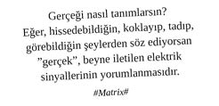

BlackBerry, “Profesyonel İş Dünyasında Kariyer” serüveninde daha üst kademelere yükselebilmek, her fırsatta aidiyeti gösterebilmek, sisteme daha çok katma değer sağlayabilmek ve rüyadan uyanmamıza hiç fırsat vermemek için makineler tarafından tedarik edilmiş post-modern prangadır. O, beyaz yakalı profesyonelin eline verilmiş bir şartlı tahliye kelepçesi, tam donanımlı yaşam destek ünitesidir.
BlackBerry, profesyonel damaklardaki o küçük apsedir işte, dilinle oynamasan hemen geçecek ama duramıyorsun, oynuyorsun ve oynuyorsun...
Oynadıkça rüyadan kopamıyorsun, uyanamıyorsun.
Beyaz tavşanı izlemeyi bıraktığında daha da profesyonelleşiyor ve yetkin bir BlackBerry kullanıcısı haline geliyorsun.
Bu haliyle mevcut teknolojinin müzelik olmaya yürüyen dedeleri konumundaki BB’lerin nasıl olup da profesyonel ortamlarda böylesine “şekil” kalabildiğini düşünmek yerinde bir gayrettir. Esasen BB’nin uçup giden teknoloji oyuncakları arasında hâlâ itibar görebilmesi Anglosakson duruşuna verilebilir. Evvela siyahtır ve kasası Aston Martin’den esintiler sunmaktadır. Bu haliyle tarz olabilen ilk cep telefonudur BB, tekildir, şekildir. Dolayısıyla “business” ortamlarda ne idüğü belirsiz Uzakdoğu markalarının bin özellikli oyuncaklarına basmaya devam etmektedir.
BlackBerry Messenger (BBM): Yetkin bir profesyonel, amele gibi SMS atmaktan ziyade hızlı mesaj iletişimini BBM ile yönetir
Profesyonel diyaloglarda BlackBerry Messenger’ın açık ismi kullanılmaz BiBiEM denerek mecraya hâkimiyet mesajı verilir.
BBM’e arkadaş ekleme süreci, sıradan ölümlülerden farklı olarak mutlaka barkod kullanım yöntemi ile gerçekleştirilir. Mail ile, pin code ile BBM’e kişi eklemek hiç profesyonel değildir. Hepsinden öte BBM denen olay bir exclusive işaret dili gibi çalışır. Her ne kadar öğrenci modelleri çıktığından beridir karizma çok mainstream hale geldiyse de BBM profesyonel insanlar arasındaki en güvenli ve tercih edilen iletişim metodu olmaya devam etmektedir. Ayrıca iki profesyonelin birbirlerine BBM pin’lerini vermeleri samimiyetin belli bir seviyenin üzerine çıktığının, o kişiyle ciddi düşünüldüğünün de göstergesidir.
Ruh emici toplantılar esnasında; BBM üzerinden, gündem maddelerinin yoluna su kaçırmak, kişilerin; kılık, kıyafet, takı, aksesuar ve söylemleri üzerine geyiğe perendeler attırmak çok profesyoneldir.
BBM üzerinden ping atamayan bizden değildir...
BBM ile Foursquare’i birbirine bağlayıp her beyaz yakalının gitmeye öyküneceği mekânlarda check-in yapmak ve yapılan check-in’in BBM statüsünde kalması önemlidir.
BBM listesini profesyonelce gruplandırmadan kullanmak hiç şık değildir.
BBM kullanıcı profilinde yer alacak mesaj mutlaka İngilizce ve çok havalı bir laf olmalıdır.
BBM’deki arkadaşlarınla karşılıklı amiral battı oynamak hiç profesyonel bir hareket değildir.
BlackBerry’nin her daim yeni model olanı makbuldür. Son zamanlarda yaygınlaşan dokunmatik versiyon çok havalı görünse de aslına rücu etmemiş bir alışkanlığın günün birinde bu noktaya geleceği bellidir. Mümkünse, kullanılan cihaz Porsche Design olmalıdır. Bununla birlikte, yerine göre hafif eskimiş, yıllanmış ve yer yer tuşları silinmiş bir Bold kullanmak da “Biz ne işler yaptık bu makineyle. Değer, kıymet bilen insanız, apaçi gibi son model peşinde koşmayız, bi ara nasılsa alırız yoğun adamız” mesajı verir, adamında çok şık durur.
Gelen her mail’e verilebilecek en hızlı şekilde cevap vermek ve “Zero Inbox” düsturunu hayatında şiar edinmek çok profesyoneldir.
BlackBerry ortamında “meeting invitation” atabilmek sizi birçok profesyonelden farklılaştırabilir.
Yolda, epsilon hızıyla ilerleyen trafikte, gelmiş geçmiş tüm email’lere meydan okumak gerekir.
Araba kullanırken, kırmızı ışıkta göz ucuyla mail’lere bakıp hızlıca cevap vermek yetkin BlackBerry kullanımı belirtisidir.
Kuaförde; kaş aldırırken, saç boyatırken, fön çektirirken, röfle yaptırırken, balyaj yaptırırken, maşa, makyaj ve pedikür operasyonlarında BlackBerry kullanımı rutin kuaför deneyimini farklılaştırır, iş verimliliğini arttırır.
BlackBerry kullanıcı profiline adını, soyadını, telefon numaranı girmek ve bu girilen bilgilerin telefon kilitlendiğinde görüntülenmesi ileri düzey kullanımı ifade eder.
BlackBerry’nin telefon dili mutlaka İngilizce olmalıdır.
“Contact List”te yer alan kişilerin adları, soyadları, çalıştıkları firmalar, pozisyonları, email adresleri ve BBM pinleri tamamen doldurulmuş ve güncel olmalıdır.
BlackBerry bünyesinde profesyonel beyaz yakalı uygulamalarının (LinkedIn, Evernote, Twitter, Facebook, Google Maps, Foursquare) hepsi yüklenmiş ve aktif olarak kullanılıyor olması gerekmektedir. BlackBerry’yi herhangi bir uygulama yüklemeden kullanmak plaza ortamlarında ırgatlık olarak yorumlanmaktadır.
Toplantı esnasında, BlackBerry üzerinde mail ortamına (ya da Evernote ortamına) toplantı notlarını almak ve katılımcılara göndermek profesyonellikte zirvedir.
BlackBerry’yi herhangi bir kılıf ile kullanmak hiç profesyonel değildir. Çünkü beyaz yakalının BlackBerry’yi kılıfına sokacak zamanı olmaz, sürekli kullanım halinde, sürekli aktiftir. Eğer kılıf tercih edilecekse mutlaka ama mutlaka orijinal cihaz aksesuarı olmalıdır. Aliexpress veya DealExtreme ürünü kullanmak ırgatlık olarak algılanır. Bu ürünlerden uzak durulmalıdır.
BlackBerry’yi araçta bluetooth ile kullanmak çok havalıdır.
Eşek kadar kulaklıkla ya da standart kutudan çıkan BlackBerry kulaklığı ile telefon görüşmesi yapmak kartvizitin ağırlığını zedeler. Mutlaka özgün, dikkat çekici ve profesyonel kulaklık edinilmelidir.
Mail sonlarına imza olarak “Sorry for misspeling” gibi bir mesaj yazarak, “Hayvanlar gibi yoğunum, yerimde oturamıyorum, sürekli mobilim onun için BlackBerry’den yazıyorum. Bu yoğunlukta kim sallar imlayı, yazım kurallarını. Cevap verdiğime şükret!” mesajı verilir.
Günün / gecenin herhangi bir anında kırmızı ışık görülünce, manivelaya basılınca farenin verdiği tepki verilerek, hemen mail cevaplanır ve sürdürülebilir profesyonel duruş skor kartına bir puan daha yazdırılır.
Etkin marka konumlandırması açısından, gece üçte yazılan bir mail’in en az bir yıl boyunca entegre iletişimi yapılması gerekmektedir.
BlackBerry’nin kamera yetkinliği profesyonel düzeyde olmadığı için kamera özelliği kullanılmaz. Sağda solda BlackBerry ile fotoğraf çekenler özellikle de flash patlatanlar itina ile dışlanır.
Tuvalete BlackBerry’siz girmek, tuvalet esnasında hatırı sayılır mail cevaplamamak verimli çalışmayan profesyonele delalettir.
Beyne iletilen elektrik sinyalleri tüm hayatımızı kaplamışsa; aldığımız nefes, sevinçlerimiz, hüzünlerimiz, acılarımız, umutlarımız, tüm duygularımız hedef odaklı profesyonel birer elektrik sinyaline dönüşmüşse nasıl bir gerçeklikten bahsedebiliriz?
Ya da bahsedilen gerçek, gerçek midir?...
